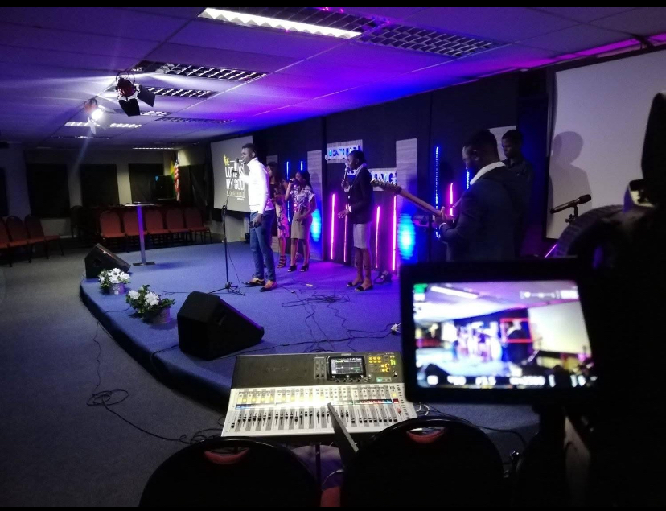

Zadio Gaspard Kazadi, a qualified sound engineer, music director, and studio maestro with over a decade of experience in the music and entertainment industry. With a degree in Sound Engineering and an ear for sonic excellence, ZK founded ZK Production Studio to serve artists, creators, churches, and concert spaces with unmatched audio quality and music direction.
His portfolio spans across studio music production, live sound engineering, film post-production, and artist mentorship. From directing choirs to producing albums and managing large-scale event audio setups, ZK's creative approach is both technical and spiritual,blending precision with passion.
Driven by the vision to elevate local talent and empower voices that matter, ZK continues to innovate and inspire through every session, every note, and every beat.

© 2012, ZK PRODUCTION STUDIO - All Rights Reserved | BUILT BY JAY_K